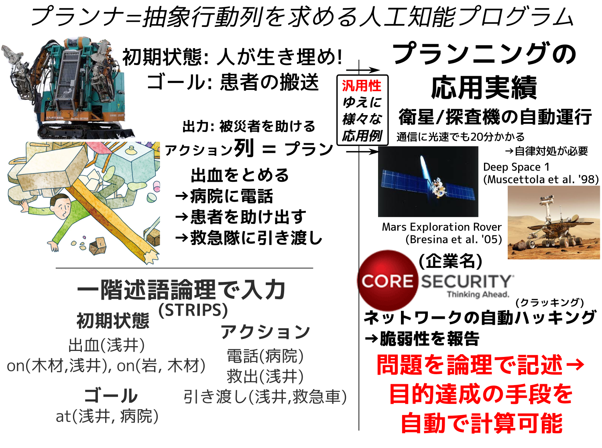
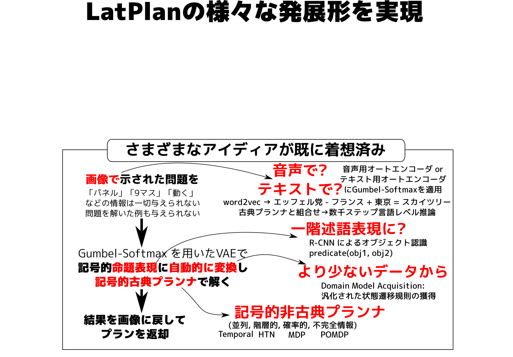

研究テーマ: Neural-Symbolic複合システムによる 次世代AIシステムの研究
浅井 政太郎 東京大学 総合文化研究科 学振DC2
発表要旨
これまでの研究業績
Fully Automated Cyclic Planning for Large-Scale Manufacturing Domains※1. ICAPS14.
Solving Large-Scale Planning Problems by Decomposition and Macro Generation※1. ICAPS15.
Tiebreaking Strategies for A* Search: How to Explore the Final Frontier※1. AAAI16. (JSAI 学生奨励賞)
Tie-Breaking Strategies for Cost-Optimal Best First Search※1. JAIR 58 (2017): 67-121.
Exploration Among and Within Plateaus in Greedy Best-First Search※1. ICAPS17.
Efficient Optimal Search under Expensive Edge Cost Computation※2. IJCAI17.
Classical Planning in Deep Latent Space: From Unlabeled Images to PDDL (and back)※1. KEPS17.
今後の研究計画, 研究成果の産業応用への抱負
※1 Masataro Asai, Alex Fukunaga
※2 Masataro Asai, Akihiro Kishimoto, Adi Botea, Radu Marinescu, Elizabeth Daly M, and Spyros Kotoulas
1 背景 – 自律機械とは?

1.1 誰?
1.1.1 誰?
1.1.2 誰?
1.1.3 誰?
1.1.4 誰?

1.1.5 誰?

1.1.6 誰?
AI研究者の夢=
1.1.7 誰?
AI研究者の夢= 自律行動機械
1.2 なぜ自律機械? 社会的意義 — 例えば、操縦士が足りない!


- そのままでは役に立たない!
1.2.1 「人」は簡単に増やせない – Human Resource and Training
- ✘ 時間 がかかる
- 訓練に ＞100時間, 必要な時だけ増やす のは不可能
- ✘ ￥￥￥￥ がかかる
- 訓練官、訓練場所、訓練用具
- ✘ 技術は 維持が重要
- 定期的な再訓練、長期的コスト、さらなるマニー
- ✘ 平時は 無駄 な技術
- 普段は意味がない – 無駄なマニー!
1.3 知的機械の「クラス」
1.3.1 知的機械の「クラス」
1.3.2 知的機械の「クラス」
1.3.3 目的達成型機械
反射的に動くロボットでは 複雑なゴールを設定できない
瓦礫 に埋もれた 骨折・出血 している被災者を なるべく早く 病院に運ぶ。
救急車 を先に呼んでおき、 患者を傷つけない ように, 素早く , 瓦礫 を 崩 れないよう に どけて, 止血 し, 当て木 し, 担架に乗せ て, ちょうどきた 救急車 に 隊員と協力 して運び入れる。
- → 目的達成型の知能が必要
2 目的達成型知能のための自動プランナ (≠ モータ制御)
2.1 目的達成型知能のための自動プランナ (≠ モータ制御)
2.2 目的達成型知能のための自動プランナ (≠ モータ制御)

2.3 Xerox PARC Printer: Hypermoduler Systems
Crawford, Lara S., et al. "On-Line Reconfigurable Machines." AI Magazine 34.3 (2013): 73-88.
2.4 プランニング(自動行動計画)分野の位置づけ
3 査読論文実績 (抜粋)
AAAI, IJCAI: AI一般の1st-tier, ICAPS: プランニング専門の1st-tier, JAIR: トップジャーナル
ICAPS14 (採択率33%) (IHI共同研究) Fully Automated Cyclic Planning for …
ICAPS15 (採択率33%) Solving Large-Scale Planning Problems by Decomposition …
AAAI16 (採択率26%) (JSAI 学生奨励賞) Tiebreaking Strategies for A* Search: …
JAIR17 (採択率12%) Tie-Breaking Strategies for Cost-Optimal Best First Search.
ICAPS17 (採択率33%) Exploration Among and Within Plateaus in Greedy Best-First Search.
IJCAI17 (採択率25%) (IBM Research 応用研究) Efficient Optimal Search under …
KEPS17 (採択率60%) Classical Planning in Deep Latent Space: From Unlabeled Images …
応用研究、基礎研究 共に経験あり
3.1 業績1: 査読付き国際学会 ICAPS14 (採択率33%) (IHI共同研究)
3.2 業績2: 査読付き国際学会 ICAPS15 (採択率33%) スキップ予定

3.3 業績3: 査読付き国際学会 AAAI16 (採択率26%)

3.4 業績4: 査読付き論文誌 JAIR (採択率12%) スキップ予定
3.5 業績5: 査読付き国際学会 ICAPS17 (採択率33%) スキップ予定
3.6 業績6: 査読付き国際学会 IJCAI17 (採択率25%) (IBM共同研究)

4 産業技術総合研究所で行いたい研究
Neural-Symbolic複合システム
による
次世代AIシステム
の研究
5 深層学習
とてもはやっている
5.1 認知タスクで人間に匹敵する精度

5.2 認知タスクで人間に匹敵する精度
5.3 ニューラルネットの役割
「直感的な」問題を解く 関数 を学習すること
求めるべき関数 $y^*=f^*(x)$
タスク 入力x 出力y 画像分類 画像 ラベル(車、ネコ、猿・・・) 翻訳 文章(日) 文章(英) 未来予測 フレーム列 次のフレーム - NNが表す関数 $y=f(x)$
- 学習 ≡ 誤差 $||y-y^*||$を最小化する最適化問題 — 関数近似機 (銀の弾ではない)
5.4 知的機械を作る上で深層学習の果たす役割
5.5 知的機械を作る上で深層学習の果たす役割

- 深層学習でカバーできない部分には 記号的AIが必要
6 深層学習でカバーできない部分: 私の研究してきた記号的AI
- 手段: 論理による推論
- 命題, 一階述語, 時制論理, ベイズ論理 etc
- 記号(シンボル)
- 命題や述語の 識別子
- 問題: 組合せ爆発
- 有限のシンボルでも発生
- アルゴリズム
- 木/グラフ探索、動的計画、分枝限定
- 特徴: 完全性, 健全性, 最適性の理論保証
- 製造システム、運送 (時間=お金)、人工衛星 (有限の燃料)、 間違った解が許されないミッションクリティカルシステム
- 特徴: 推論過程を説明可能
- レスキュー・宇宙船 (人間の安全)

6.1 Q. 深層学習と 記号的AI はどう違う?
A. レイヤが違う
機械学習・Neural Networks == 関数近似
for 認識・反射
入力 は Subsymbolic (連続値)
画像、音声、非構造化テキスト:
感覚的知能:
反応, 直後 の行動の決定
パブロフの犬 : 餌を認知→よだれ
自動運転 : 赤信号,人 → 止まる.
翻訳 : 文章 → 文章
囲碁局面の評価関数 : 局面 → 勝率
☺ 効率よく 1-to-1 mapping
☹ 単純作業
推論・探索
for プランニング・ゲーム・定理証明
入出力は Symbolic
論理 オブジェクト ルール
論理・推論による知能:
未来に渡る 戦略の決定
(戦略 = 行動の 列や木)
レスキューロボ : ゴール = 被災者生存
証明器 : ゴール = QED
コンパイラ : 命令列の生成
囲碁,将棋 : ゴール = 勝利
☺ 順序制約+複雑な作業
- AlphaGo = Subsymbolic (DLNNによる評価関数) + Symbolic (MCTSによる探索)
6.2 既存の有名システム
AlphaGo = Subsymbolic (NNによる評価関数) + Symbolic (MCTSによる探索)
- ただし ドメイン依存 – 囲碁に特化, "マス目"や"石"といった概念をハードコード
- 膨大な棋譜が必要 — 運用データがない環境(e.g.火星)には適用不能
- 人って模範解答がないと行動できませんか? 真の自律機械は前例無しでも行動可能
DQN = Subsymbolic (DLNN) + 強化学習 (DLNN)
様々な Atari Game につかえる汎用フレームワーク (Invader, Packman…) だが
- 強化学習は 学習結果に盲目に従う
- Atariゲームは 脊髄反射で生き残ることが可能
- → 複雑な論理思考は実現できていない
6.3 記号的AIによる論理推論の重要性
7 業績7: 査読付きワークショップ KEPS (採択率60%)
7.1 業績7: 査読付きワークショップ KEPS (採択率60%)
7.2 業績7: 査読付きワークショップ KEPS (採択率60%)
7.3 業績7: 査読付きワークショップ KEPS (採択率60%)
7.4 業績7: 査読付きワークショップ KEPS (採択率60%)
7.5
つまり
20年来の問題である
深層学習と記号的AIを融合させる
プロトタイプが出来た!
シンボルグラウンディング問題
8 今後の研究計画

9 産業応用: 深層学習+記号的推論 = ブレークスルー
定形流れ作業以上の産業用ロボ
- カメラ → 論理表現 → 記号的推論 → 行動
- 動的な環境や故障、命令
- ラインを停止させず 自動対応
- 自律性のないロボには不可能
10 産業応用: 深層学習+記号的推論 = ブレークスルー
人工無能以上の対話ボット
- 人工無能 : 従来型対話ボットの総称
- 反射的応答 = 論理を持たない
- Apple Siri (人の書いた返答データベース)
- Microsoft りんな (学習した返答ルール)
- テキスト → 論理表現 → 記号的推論 → 返答
- 論理に基づき 思考する ボットへ

11 まとめ
- 難関国際会議(33%) Fully Automated Cyclic Planning for Large-Scale Manufacturing Domains. In ICAPS2014.
- 任意の問題から1種類の繰り返し構造を自動で検出
- 工場での製造スケジューリング (x1000 高速化, 探索空間 106 → 10274)
- 難関国際会議(33%) Solving Large-Scale Planning Problems by Decomposition and Macro Generation. In ICAPS2015.
- 複数の繰り返し構造をより柔軟・汎用に組み合わせる手法
- ベンチマークセット全体で高速化 (x3-4 高速化, 探索空間 107 → 1028)
- 難関国際会議(26%) Tiebreaking Strategies for A* Search: How to Explore the Final Frontier. In AAAI-2016. (JSAI 学生奨励賞)
- コストゼロの辺がグラフ探索に引き起こす問題を解決 (探索空間 106 → 1088)
- 難関論文誌(12%) Tie-Breaking Strategies for Cost-Optimal Best First Search. Journal of Artificial Intelligence Research 58 (2017): 67-121.
- (3.) に加え タイブレーキング と 非最適コスト探索の関連性を指摘, さらに性能向上
- 難関国際会議(33%) Exploration Among and Within Plateaus in Greedy Best-First Search. In ICAPS2017.
- 非最適コスト探索をフラクタルを用いて改善
- プラトー内均一化とプラトー間均一化の直交性を実証
- 難関国際会議(25%) Efficient Optimal Search under Expensive Edge Cost Computation. In IJCAI-2017.
- 辺コストの動的計算が必要な問題に対して高速な最適アルゴリズムDEA*
- 国際ワークショップ(60%) Classical Planning in Deep Latent Space: From Unlabeled Images to PDDL (and back).
Knowledge Engineering for Planning and Scheduling (KEPS) Workshop
- 画像から命題を自動生成して記号的AIで組合せ最適化問題を解き、画像で出力するシステム
12 付録
12.1 既存システムとの違い (追加)
NNで 直接問題を解くシステム
- TSP [Hopfield and Tank, 1985], NeuroSolver [Bieszczad and Pagurek, 1998], Neural Turing Machine [Graves et. al., 2014]
- NNで解くが、入力はシンボリック (ニューロンが人の与えた状態変数に対応)
- 完全性、最適性などの保証なし
NNを認識でなく探索中の枝刈り用に使うシステム
- AlphaGo [Sievers 16], Rubik Cube [Arfaee et al., 2011], Planning [Satzger and Kramer, 2013]
- LatPlan は NNを探索の外で使う
12.2 Learning from Observation との違い
主にロボットの経路探索 (ローレベル制御) [Argall et al., 2009]
ボードゲームの学習だが「マス目」など強い仮定 [Barbu et al., 2010; Kaiser, 2012; Kirk and Laird, 2016]
Action Segmentation problem がある
- 「映像の観察」を中心とするので、いつアクションが始まる/終わるのか解らない
- LatPlan には関係なし
12.3 AIプランニングの Killer App
- 人が高価or不可能な作業
- 原発, 宇宙空間, 火星, 深海
- 正しさと最適性の理論保証が必要なミッションクリティカルシステム
製造システム、運送 (時間=お金)
人工衛星 (燃料使いきれば運用終了)
間違った解は許されない
- 思考過程を説明可能なシステム
- レスキュー・宇宙船 (人間の安全がかかっている)
12.4 古典プランニング問題 (決定的,完全情報) – Blocksworld
非古典的なさまざまな拡張
(並列アクション,POMDP,HTN… どのAIの教科書にものっている)
12.4.1 アクション = 条件付き状態遷移
アクション (move ?X ?Y)
?X, ?Y : 変数。 値 BLOCK-A, BLOCK-B などを適用して使う
条件 と 効果 で構成される
条件 : 実行に必要な条件を表す命題
(clear ?X) : 積み木 ?X の上が空
(clear ?Y) : 積み木 ?Y の上に空
効果 : 前後の状態の 差分 を表す命題
(on ?X ?Y) を 追加 : ?Y の上は ?X
(clear ?Y) を 削除
モデリング言語 PDDL で記述
12.4.2 プランニング = グラフ探索
ノード : 状態 = 命題の集合 ⇒ (on A B), (clear A) など
辺 : アクション ⇒ (move A B) 等

*1 [Helmert, 2006] [Richter, 2010]
12.5 古典プランニングを研究する意義は?

12.6 AIの倫理について
- 研究内容は 漠然とした「AI」のうち グラフ探索 の研究
- AIの目的はプランナのゴールで定義される
- AI自体は善悪の判断を行わない
- 人が与えるゴールについての倫理的問題 (→ 兵器使用)
- 価値判断は与えられる入力の中にある = 使用者の価値観/データのバイアスを反映
- 悪用の問題はある。しかし、自分としては、災害救助ロボットなど、人道的な応用を目指している
12.7 Gumbel-Softmax
12.7.1 Gumbel-Softmax

12.8 ディープラーニング関連・LatPlan実装
詳しくは論文を
Keras + TensorFlow
1764(42x42)
[→FC(4000,ReLu)→Batchnorm→Dropout(0.4)] × 2
→FC(49,GumbelSoftmax) (variational loss)
[→FC(4000,ReLu)→Batchnorm→Dropout(0.4)] × 2
→1764(42x42) (loss: Binary crossentropy)
- なぜ全結合??
論文の主題は SAEで命題を作る方針がそもそもうまく行くかどうか
→余計な要素を省いて限りなくシンプルに
- 8-パズルでの訓練
可能な全状態 (362880) 中 12000 枚 で訓練 → 汎化能力あり
Adam optimizer (learning rate:0.001)
12.9 第五世代コンピュータとの違いは?
第五世代コンピュータ : 並列推論機械(Prologベース,ハードウェア,OS)
ハードの問題ではなく、 根本的なソフトウェア技術、 探索技術 が未発達だった
| 第五世代 | 現在 |
|---|---|
| 後方 全探索 +バックトラック | 前方ヒューリスティック探索 |
| 枝刈りで指数爆発を抑える | |
| Prologベース | C/C++で高度に最適化されたプログラム |
| State packing, 決定木, mutex… |
今はベンチマーク問題 1104問 のうち 5分で 800問 前後解ける
仮に 当時のソフトウェア を 現在のハードウェア で動かしたとしても、 100問も解けない
12.10 Explicit Graph と Implicit Graph との違い
カーナビ、ソーシャルグラフなど : Explicit Graph
グラフ全体がメモリ(〜数ペタバイト)または二次記憶(〜数ゼタバイト)に収まる
参考: 2012年の全世界のデジタルデータ: 数ZB (1ZB = 1021 バイト)
AI and Web, social graph
プランニングにおける探索グラフ : Implicit Graph
地球上の全計算資源を集めても二次記憶に入らない
グラフのノード数は状態変数に対して 指数的に増加
動的メモリ確保+優れた枝刈りをしないと問題が解けない
探索空間サイズの例:
3x3x3のルービックキューブ: 4.32 x 1019 = 4 EB
4x4x4のルービックキューブ: 7.40 x 1045 ＞ 1024 ZB
5x5x5のルービックキューブ: 2.83 x 1074
Gantz et al. "The digital universe in 2020: Big data, bigger digital shadows, and biggest growth in the far east." IDC iView: IDC Analyze the Future 2007 (2012): 1-16.
12.11 似たような研究は誰がやっているか
ICAPS, SoCS : 例年200人-300人の参加者を集めており大変盛況,
AAAI, IJCAI : プランニングに関する論文は例年数十本採択 Proceedingsの一つの章
JAIR, AIJ (トップジャーナル) : 同様に多い (JAIR Volume 54: 12本中 2本 がプランニング)
主な研究室:
MIT CSAIL (Brian Williams), Carnegie-Mellon,
NASA (NASA Ames および NASA/Caltech JPL のそれぞれに20名以上の研究者)
欧州宇宙機関(ESA)
King's College London, U. Freiburg, U. Bazel, U. Toronto, U. Ben-Gurion
指導教員は NASA JPL AI Lab の元メンバー
12.12 国内で誰が似たようなことをやっているか
この専門分野をやっている人はほぼいない
石田 亨先生 (京都大学) — 以前は日本のA*系の探索手法の代表者, R. E. Korf と共著
- R.E. Korf — Alex Fukunaga — 浅井 政太郎
岸本先生 (探索) (東工大 → IBM Research Ireland)
少し離れているが似ている研究というと
- SATソルバ, ASP(解集合)ソルバ, CPソルバ系, 推論系 – logic and reasoning : 田中 哲朗先生 (総合文化研究科), 鍋島英知先生 (山梨大), 田村直之先生, 平山勝利先生 (神戸大), 田沼先生 (東工大)
- 井上克己先生 (NII) — Lemma Reusing for SAT based Planning and Scheduling (ICAPS10)
- AAMAS マルチエージェント, CSP : 横尾誠先生 (九大)
- ERATO グラフ探索(explicit graph)系, 大規模知識処理系 : 河原林健一先生 (NII), 秋葉先生, 湊先生(北海道)
- ゲーム系 金子先生 (総合文化研究科)
12.13 汎用性を失わずに解く?
No Free Lunch 定理: 最適化アルゴリズムの性能は 全問題の平均を取れば 全て同じ
Q. NFL定理のもとで「汎用性を失わずに高速に解く」というのは不可能?
A. NFL定理は確かにそのように主張するが、プランニング分野の意味する「汎用性」は
実問題(人間にとって有意義な問題の集合) における汎用性である。
全プランニング問題の集合 ⊇ 人間にとって有意義な問題の集合
従って、 全問題の平均を取れば という前提が成り立たない。
12.14 その研究は…
| 重要度 | 評価 | オリジナリティ | 過去のインパクト | 未来のインパクト | 動機 | |
|---|---|---|---|---|---|---|
| ACP | 発表した | ループの概念を検出 | 大規模問題 | 産業応用 | 人間プログラマでは追いつかない | |
| 難関学会 | ||||||
| CAP | 難関学会 | 問題分割手法 | 大規模問題 | 産業応用 | より一般化したい | |
| 発表した | 柔軟な統合手法 | それまでの分割系の手法より | ||||
| 広範囲に分割 | ||||||
| AAAI16 | AAAI査読者: | 同コストのノードの分類 | 70年代からの定説を覆す | 広範なグラフ探索問題 | 下界以外で改善したかった | |
| 2/3 人に絶賛 | 通常と異なる方法で性能改善 | 基礎技術 | ||||
| (+ JSAI学生奨励賞) | コスト0は実応用によく使われる | |||||
| IJCAI17 | IJCAI査読者: | 辺コストが未知のドメイン | 医療福祉での実問題 | |||
| 明確な動悸,十分な実験 | という問題設定 | 全ての辺を計算できない | ||||
| KEPS17 | IJCAI査読者: | 画像から自動で命題を生成 | ニューラルは記号と相容れない | ニューラル・記号複合システム | ||
| 「重要な方向性」 | シンボルグラウンディング |
12.15 HTN と ICAPS-15 の違い
HTNは人間が問題分割を行う 人件費を考えると非常にコストパフォーマンスが悪い → 自動で問題分割
12.16 Q&A
- Q. 探索空間の比較について、なぜ「以前」の数字がスライドによって変わるの?
- A. 論文の中で使った実験設定が異なるからです。